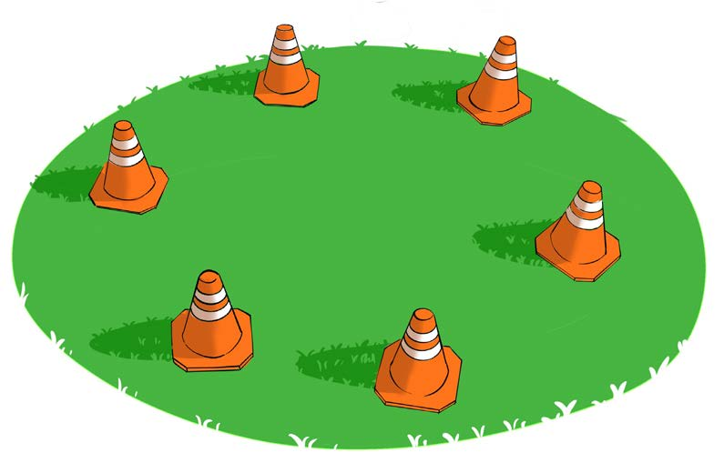

Hatua za kufanya:
1.
Panga koni katika muundo wa duara kwenye eneo wazi zikiwa katika umbali wa hatua 3 hadi 5 kutoka koni moja kwenda nyingine, kama inavyoonekana katika Kielelezo namba 1;

2.
Kaa katika jozi au vikundi, huku kila kundi likianzia kwenye koni tofauti;
3.
Baada ya amri ya mwongozaji anza mzunguko kwa kufanya zoezi moja la unyumbufu lililoteuliwa kwa kila koni; na
4.
Baada ya kukamilisha koni zote, rudi mahali pa kuanzia.
Baadhi ya mazoezi ya kufanya kwa kila koni
1. Kunyoosha sehemu za nyuma za mwili:
(a)
Simama kando ya koni na inama chini ili kugusa vidole vya miguu, kama inavyoonekana katika Kielelezo namba 2; na
(b)
Shikilia kwa sekunde 10 hadi 15.